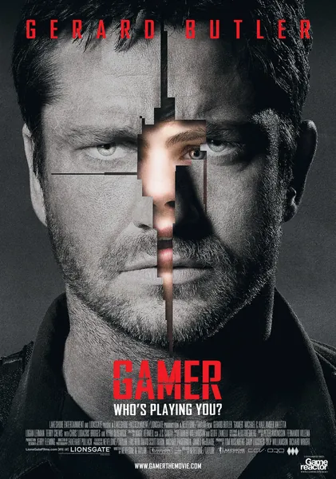

Фильм · 2009 · Боевик, Триллер
В мире игры Slayers миллионы людей управляют телами других людей, подобно игровым персонажам: заключенные становятся аватарами в обмен на возможное помилование. Создатель системы Кен Касл готовит следующий этап: игру без внешнего управления, где люди свободны, но при этом послушны, поскольку находятся в зависимости. Джерард Батлер пробивается к создателю сквозь шумный, дерзкий и залитый неоном мир. Это сатира на киберспорт, стриминг и экономику внимания — неприглядная и безумная, но честная в главном: зависимость от чужого взгляда — это и есть контроль.
In the world of the game Slayers, millions control other people's bodies like game characters: convicts become avatars in exchange for possible clemency. Ken Castle, the system's creator, readies the next step: Slayers without control, where people are free yet obedient, because addicted. Gerard Butler fights his way to the creator through a loud, brash, neon-soaked world. A satire on esports, streaming and the attention economy — ugly and unhinged, but honest where it matters: addiction to someone else's gaze is control.
← Вернуться в каталог IT Movies